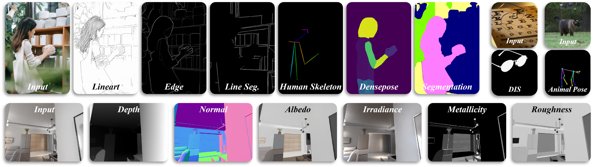

统一视觉感知
探索可扩展到多任务、多视觉域的 foundation-adapter 感知框架。
博士生 · VIPL 实验室 · 中国科学院计算技术研究所
我关注世界模型、图像生成与通用视觉感知，当前重点研究基于扩散模型的 foundation-adapter 系统，以及具有物理一致性的生成式世界模型。
研究
探索可扩展到多任务、多视觉域的 foundation-adapter 感知框架。
研究更符合运动、碰撞、摩擦、自由落体等物理规律的视频生成模型。
设计提升早期语义轮廓形成速度与模型收敛效率的训练策略。
动态
UniPercept 为 CVPR 2026 一作论文。
获得中国科学院大学三好学生与一等学业奖学金。
进入中国科学院计算技术研究所攻读博士学位，导师为陈熙霖老师。
论文

CVPR 2026 · 一作
UniPercept 提出了一个用于通用且可扩展视觉感知的 foundation-adapter 框架：共享的扩散基础模型学习跨视觉域的通用感知表征，轻量级任务适配器捕捉每类感知任务的独特特征。
该系统目前支持 14 类视觉感知任务，并能够以较低计算与数据成本高效适配新任务。
项目
进行中
围绕物理一致的生成式世界模型开展研究，探索利用视频生成学习真实世界中的时空演化规律，提升模型对运动、碰撞、摩擦、自由落体等牛顿物理规律的遵循能力。
腾讯超新星项目 · 进行中
研究 DDPM、DDIM 与 SiT 等模型在高噪声阶段的 x0 预测行为，分析训练与采样机制。
教育
计算机科学与技术博士在读，VIPL 实验室。GPA: 3.87 / 4.00。
计算机科学与技术学士。GPA: 3.76 / 4.00，综合排名 6 / 113。
荣誉
中国科学院大学三好学生；一等学业奖学金。
中国大学生程序设计竞赛女生赛，金奖。
挑战杯揭榜挂帅，铜奖。
江苏省程序设计竞赛，银奖。
全国大学生数学竞赛二等奖；江苏省高等数学竞赛二等奖。